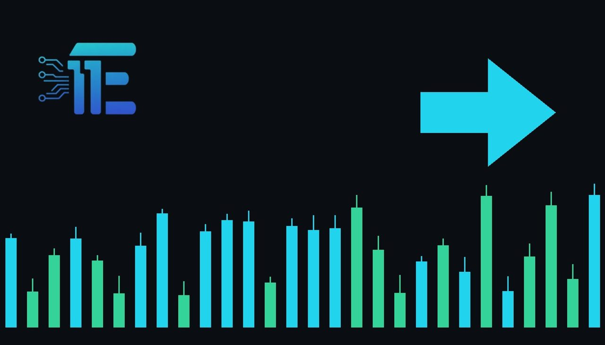

Gold Hovers Above $4,000 Ahead of October Jobs Report4000 ដុល្លារអាមេរិក មុនពេលការចេញផ្សាយរបាយការណ៍ការងារ
XAU/USD impact: ◆ Mixedផលប៉ះពាល់លើ XAU/USD: ◆ ចម្រុះ

Gold futures opened lower on Friday morning as market participants awaited the key nonfarm payrolls release. The upcoming employment figures are critical for shaping expectations around US monetary policy and bullion valuation.
តម្លៃមាសបានធ្លាក់ចុះបន្តិចនៅក្នុងការជួញដូរពេលព្រឹក ខណៈអ្នកជួញដូររង់ចាំទិន្នរបាយការណ៍ការងារ។ ទិន្នន័យការងារនេះមានសារៈសំខាន់ខ្លាំងណាស់ក្នុងការកំណត់ទស្សនវិស័យអត្រាការប្រាក់របស់ធនាគារកណ្តាល។
Gold futures opened at $4,098.50 per troy ounce on Friday, November 6, 2026, marking a 0.4% decline from the previous session's closing price. In early trading hours, prices slid further to $4,072 per troy ounce. This cautious market positioning occurs directly ahead of the scheduled Bureau of Labor Statistics October nonfarm payrolls report.
កិច្ចសន្យាអនាគតមាសបានបើកការជួញដូរនៅតម្លៃ 4098.50 ដុល្លារអាមេរិកក្នុងមួយអោនកាលពីថ្ងៃសុក្រ ទី 6 ខែវិច្ឆិកា ឆ្នាំ 2026 ដោយបានថយចុះ 0.4% ធៀបនឹងតម្លៃបិទកាលពីថ្ងៃព្រហស្បតិ៍។ នៅក្នុងការជួញដូរពេលព្រឹក តម្លៃមាសបានធ្លាក់ចុះមកនៅត្រឹម 4072 ដុល្លារអាមេរិកក្នុងមួយអោន។ ការធ្លាក់ចុះនេះកើតឡើងចំពេលដែលទីផ្សារកំពុងរង់ចាំការផ្សាយរបាយការណ៍ការងាររបស់សហរដ្ឋអាមេរិកពីសំណាក់ការិយាល័យស្ថិតិការងារ។
The primary transmission channel to XAU/USD involves potential shifts in the US dollar and Treasury yields based on employment data. Strong job numbers typically bolster the greenback and push yields higher as traders price in restrictive monetary policy from the Federal Reserve, which generally pressures non-yielding bullion. Conversely, softer labor metrics can weaken the dollar and compress yields, enhancing the appeal of gold as an alternative asset.
ច្រកចម្លងផលប៉ះពាល់មកលើ XAU/USD គឺឆ្លងកាត់តម្លៃប្រាក់ដុល្លារអាមេរិក និងអត្រាផលប័ត្របំណុលរដ្ឋាភិបាល។ ទិន្នន័យការងារដ៏រឹងមាំតែងតែជួយទ្រទ្រង់ប្រាក់ដុល្លារអាមេរិក និងជំរុញអត្រាការប្រាក់ឱ្យខ្ពស់ឡើង ដែលជាកត្តាដាក់សម្ពាធដល់តម្លៃមាស។ រីឯទិន្នន័យការងារខ្សោយវិញ អាចធ្វើឱ្យប្រាក់ដុល្លារចុះខ្សោយ និងទាញអត្រាផលប័ត្របំណុលឱ្យធ្លាក់ចុះ ដែលជាការជួយគាំទ្រដល់តម្លៃមាស។
A balanced view suggests that a significantly stronger-than-expected employment report would likely weigh on gold by reinforcing the case for higher interest rates and a stronger dollar. On the other hand, disappointing job figures or rising unemployment details would typically support precious metals by weakening the currency and driving safe-haven or inflation-hedging inflows.
ទស្សនៈមានតុល្យភាពបង្ហាញថា ទិន្នន័យការងារដែលល្អជាងការរំពឹងទុកអាចនឹងដាក់សម្ពាធដល់មាស ព្រោះវាគាំទ្រដល់ការរក្សាអត្រាការប្រាក់ខ្ពស់ និងប្រាក់ដុល្លារខ្លាំង។ ផ្ទុយទៅវិញ ទិន្នន័យការងារខ្សោយ ឬអត្រាការងារគ្មានការងារធ្វើខ្ពស់ អាចជាកត្តាជួយទាក់ទាញចំណាប់អារម្មណ៍មកលើលោហៈមានតម្លៃនេះវិញ។
Market participants should monitor the headline job creation figure, revisions to prior months, and average hourly earnings within the employment release for clues on wage pressures. Keeping an eye on subsequent Treasury yield movements and the dollar index will also provide immediate direction for XAU/USD traders.
ការកែសម្រួលទិន្នន័យខែមុន និងប្រាក់ចំណូលជាមធ្យមក្នុងមួយម៉ោង។ ការតាមដានចលនារបស់អត្រាផលប័ត្របំណុល និងសន្ទស្សន៍ប្រាក់ដុល្លារអាមេរិក ក៏ជាចំណុចសំខាន់សម្រាប់ទិសដៅរបស់ XAU/USD ផងដែរ។
Key takeawaysចំណុចសំខាន់ៗ
- Gold futures traded lower near $4,072 in early Friday sessions ahead of crucial employment data.
- តម្លៃមាសបានធ្លាក់ចុះមកជិត 4072 ដុល្លារអាមេរិក មុនពេលការចេញផ្សាយទិន្នន័យការងារ។
- The upcoming nonfarm payrolls report serves as the main driver for USD valuation and Treasury yields.
- របាយការណ៍ការងារគឺជាកត្តាចម្បងក្នុងការកំណត់តម្លៃប្រាក់ដុល្លារអាមេរិក និងអត្រាផលប័ត្របំណុល។
- Traders are closely watching wage data and job growth figures to gauge upcoming central bank decisions.
- អ្នកជួញដូរកំពុងតាមដានទិន្នន័យប្រាក់ឈ្នួល និងកំណើនការងារយ៉ាងយកចិត្តទុកដាក់។
Original commentary by THE MARKET CODE, based on public reporting from Economy. Written with the help of AI. Educational only, not financial advice.
មតិវិភាគដើមដោយ THE MARKET CODE ផ្អែកលើការរាយការណ៍សាធារណៈពី Economy។ សរសេរដោយមានជំនួយពី AI។ មាតិកាអប់រំប៉ុណ្ណោះ មិនមែនជាដំបូន្មានហិរញ្ញវត្ថុទេ។